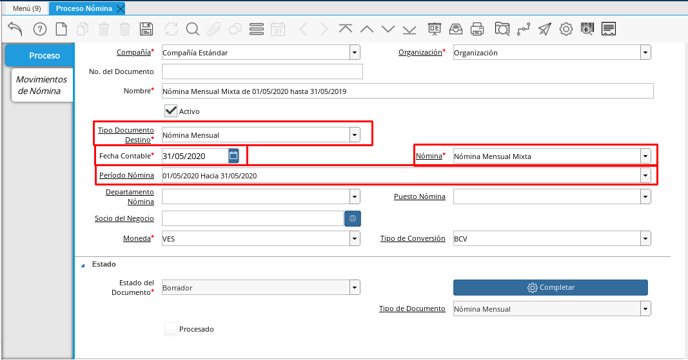

Nómina Mensual Mixta¶
Para procesar una “Nómina Mensual Mixta” debemos realizar el proceso de nómina estándar mencionado en el documento Registro de Nómina elaborado por ERPyA. En esta ventana se registran los datos principales que ADempiere requiere para crear una nómina de tipo mensual mixta, cada uno de los campos detallados a continuación son relevantes para obtener un registro exitoso:
Estatus del documento:
Seleccione Nómina Mensual en el campo “Tipo de Documento”.
El tipo de documento le permitirá definir la acción del documento que esté registrando en ADempiere.
Seleccione Nómina Mensua Mixtal en el campo “Nómina”
La nómina mensual mixta define el comportamiento de la nómina, para este caso tiene las siguientes características:
Regla de Pago: Débito Directo Contrato de Nómina: Contrato Mensual Cargo: Sueldos y Salarios por Pagar
Seleccione el período mensual correspondiente a la nómina que se está ejecutando en el campo “Período Nómina”
El período de nómina define el período laborado que le está siendo cancelado al empleado, disponiendo de los períodos creados en la definición de nómina mensual.
Seleccione la fecha “Hasta” o el último día del período que seleccionó anteriormente en el campo “Fecha Contable”
A través de la fecha contable se determina contablemente la fecha de pago de la nómina mensual en ejecución, por tal motivo se recomienda colocar la fecha “Hasta” o el último día del período que seleccionó anteriormente.

Imagen 1. Nómina Mensual Mixta
Incidencias:
Para esta nómina no son obligatorias las incidencias, pero en ADempiere se cuentan con las siguientes incidencias disponibles para la nómina mensual mixta:
INCIDENCIA
CÓDIGO
TIPO
Descanso Trabajado
(“IN_DT”)
Cantidad
Feriado Trabajado
(“IN_FT”)
Cantidad
Horas Extras Diurnas
(“IN_HED”)
Cantidad
Horas Nocturnas Trabajadas
(“IN_HNT”)
Cantidad
Fecha de Inicio de Reposo Prenatal y Postnatal
(“IN_FIRPP”)
Fecha
Días de Permiso Reposo PreNatal y PostNatal
(“IN_DRPPP”)
Cantidad
Fecha de Reposo Convalidado por el IVSS
(“IN_FREC”)
Fecha
Días de Reposo Covalidado
(“IN_DRC”)
Cantidad
Otras Asignaciones
(“IN_OA”)
Monto
Ausencias Injustificadas
(“IN_AI”)
Cantidad
Faltas Injustificadas
(“IN_FI”)
Cantidad
Retardos
(“IN_RE”)
Cantidad
Otras Deducciones
(“IN_FI”)
Monto
Para conocer cómo registrar una incidencia puede utilizar el siguiente enlace Registro de Incidencias
Resultados:
“Reportes”
Para visualizar los reportes de nóminas puede seguir los pasos que se encuentran en el documento Generar Reporte de Nómina con los datos adicionales que se indican a continuación para cada Reporte
“Recibo de Pago”
Nómina: Nómina Mensual Mixta
Proceso de Nómina: Ubique el número de documento del proceso de nómina que está ejecutando.
Configuración de Reporte de Nómina: Nómina Regular
Imagen 2. Recibo de Pago Nómina Mensual Mixta
“Detalle de Pago”
Nómina: Nómina Mensual Mixta
Proceso de Nómina: Ubique el número de documento del proceso de nómina que está ejecutando.
Configuración de Reporte de Nómina: Nómina Regular
Plantilla de Reporte de Nómina: Detalle de Pago
Imagen 3. Detalle de Pago Nómina Mensual Mixta
“Resumen de Pago”
Nómina: Nómina Mensual Mixta
Proceso de Nómina: Ubique el número de documento del proceso de nómina que está ejecutando.
Configuración de Reporte de Nómina: Nómina Regular
Plantilla de Reporte de Nómina: Resumen de Pago
Imagen 4. Resumen de Pago Nómina Mensual Mixta
“Retenciones”
Nómina: Nómina Mensual
Proceso de Nómina: Ubique el número de documento del proceso de nómina que está ejecutando.
Configuración de Reporte de Nómina: Retenciones Parafiscales
Imagen 5. Retenciones Nómina Mensual Mixta
“Aportes”
Nómina: Nómina Mensual Mixta
Proceso de Nómina: Ubique el número de documento del proceso de nómina que está ejecutando.
Configuración de Reporte de Nómina: Aportes Parafiscales
Imagen 6. Aportes Nómina Mensual Mixta
“Provisiones”
Nómina: Nómina Mensual Mixta
Proceso de Nómina: Ubique el número de documento del proceso de nómina que está ejecutando.
Configuración de Reporte de Nómina: Provisiones
Imagen 7. Provisiones de Nómina Mensual Mixta
Note
Cabe destacar que los reportes de Aportes, Retenciones, Provisiones se deben pasar al Departamento de Contabilidad